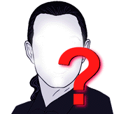
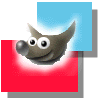
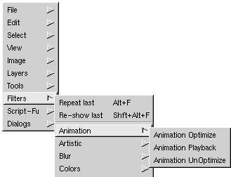
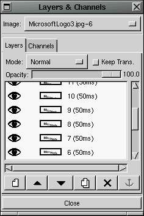

|
 Phil Ross Escribe al autor |
Creando y Editando Animaciones con GIMPResumen: En nuestra columna regular de Gimp describimos algunas técnicas simples para crear y editar animaciones usando Gimp. Hola, y bienvenido a mi tercer tutorial de Linux Focus sobre GIMP. Esta vez no seguiré cualquier trabajo de Manuel, sino que haré algo completamente sólo con GIMP. Me gustaría mostrar unas pequeñas facultades de la animación de GIMP. Éstas no son demasiadas complejas, pero si son lo suficiente buenas para ser útiles. Primero, hablemos de lo que es una animación. La palabra Animación es derivada de la palabra latina anima que significa vida o alma. Una animación, a diferencia de una pintura, parece tener vida. Puesto que una característica común de muchas cosas vivientes es el movimiento, ¿qué mejor manera de dar vida a una imagen ponerle movimiento? Para aquellos que no están familiarizados, el método tradicional que los artistas han utilizado para darles movimiento a sus imágenes es crear múltiples imágenes. Cada imagen representa una toma diferente de la escena en el tiempo , conocida como cuadro, y estos cuadros están organizados en un orden cronológico, desde el primer cuadro al último cuadro. La animación es simplemente un slideshow de estos cuadros. Una animación puede parecer muy real si es vista a la velocidad apropiada. La velocidad de una animación es mejor conocida como "velocidad por cuadro" y está frecuentemente medida en cuadro por segundo. Veamos lo que GIMP tiene para ofrecer a la animación.  Creo que en el primer y segundo tutorial de Linux Focus sobre GIMP usamos y hablamos acerca de las funciones Layers de GIMP. Fuimos capaces de hacer cosas buenas con layers, y créanlo o no, las funciones Layers van también a jugar un papel importante en la creación de nuestra animación. En suma, cada layer actuará como un cuadro aparte. El último cuadro será el primer cuadro en la animación, y los cuadros son mostrados desde el último al primero utilizando la opción de Animation Playback del filter menu. Ahora vamos a crear un pequeño ejemplo de animación. Bien, esta noche parezco estar de humor como para tomar un viejo ejemplo de Microsoft. Si ésto les ofende, pido disculpas...ésto no es un capricho, es sólo un buen ejemplo. De todas formas, quiero hacer una pequeña animación acerca de Microsoft, así que la primera cosa que hago es crear el logo de Microsoft en texto negro sobre un fondo blanco. La fuente más parecida al logo real de Microsoft es la fuente "Eras". Esta fuente no es inclinada, pero si lo fuera, apuesto a que podríamos obtener una fuente muy parecida a la fuente de Microsoft. Ésta es lo suficientemente parecida para nuestro ejemplo aunque... no necesita ser perfecto. Ahora lo que haré es colocar el logo de Microsoft en el fondo del cuadro. Abro el Layers & Channels dialog box, y hago click en el botón Duplicate Layer, el cual es el botón que muestra dos hojas de papel, una sobre en el tope de la otra, como su icon. Esto creará otra copia del layer, y ligeramente modificaré éste nuevo layer, que es el que estará en el tope. Haré click en el layer para asegurarme que está activo, entonces elijo Rectangular Select desde el toolbox. Voy a image window y selecciono la última letra del logo, que es una "t" y creo un select box a su alrededor. Luego lo selecciono y obtendremos el borde seleccionado animado (luce similar a hormigas marchando), y cuando coloco el cursor del mouse dentro de la región selecionada, aparece una cruz tetra-direccional. Esto significa que puedes hacer click y drag esa región seleccionada para moverla. Lo que entonces quiero hacer es moverlo hacia abajo ligeramente 5 pixels o más aproximadamente. Entonces hago Ctrl+H para asegurar la región en su nueva posición. Ahora regreso a mi Layers dialog box y duplico el layer del tope para hacer un tercer layer. Entonces hago click sobre el nuevo top layer para activarlo, me aseguro que mi Rectangular Selection es seleccionada desde el toolbox, y regreso a mi image window. Allí selecciono las últimas DOS letras del logo, que son "f" y "t" y las muevo a una nueva región 5 o más pixels más abajo. Esto puede ser difícil de observar sobre esta página, pero las letras están empezando lentamente y suavemente a dispersarse. Así que para desplazarlo hacia abajo completamente, voy a continuar duplicando cada top layer, activo el nuevo top layer, selecciono otra letra más y la bajo 5 pixels más o menos. Básicamente quiero hacer ésto hasta que el logo desaparezca. Cuidado, ésto puede ser un poco problemático. Encontré que es más fácil hacer invisibles los layers inferiores que los superiores. Esto se puede lograr haciendo click sobre los eye icons en la Layers dialog box la cual desactiva el eye icon para ese layer. También, cuando bajas una región, cualquier área usada es cubierta por esa región, pero si no es cubierta, podría llegar a ser transparente. En este caso tendrás que escoger tu lápiz o paint brush y pintarla.  Después de este proceso tengo 15 cuadros en total. Renombré los cuadros y coloqué números al lado de cada cuadro haciendo doble click sobre el texto en cada layer. Aquí está otro consejo. En el título de cada layer, puedes especificar un valor de tiempo de un milisegundo entre paréntesis y el Animation Playback filter mostrará ese cuadro en particular por esa cantidad de tiempo. De esta manera puedes controlar la velocidad por cuadro de la animación. No tienes que mantener la velocidad por cuadro constante, puedes cambiarla con cada cuadro. Para mi ejemplo usé un delay time de 50 milisegundos para cada cuadro. Ahora tenemos nuestra sarcástica animación representando la caída de Microsoft, y queremos guardarla para que podamos colocarla en nuestra webpage. GIMP nos permite guardar esta animación como un GIF animado el cual permitirá disfrutar a los web browsers mirándolo tanto como nosotros disfrutamos creándolo. Antes de guardarlo como GIF, necesitamos estar seguros de que nuestra imagen está en un formato de color-indexado en lugar RGB. El título de la image window nos dará esa información entre paréntesis. Si dice RGB y no indexado, tendrás que hacer click con el botón derecho del ratón sobre la image window para obtener el menú, y entonces elige Image->Indexed. Obtenemos un mensaje desde GIMP diciendo que 255 colores o menos es óptimo si estamos haciendo GIFs animados o transparentes. Obtenemos una Indexed Color Conversion box la cual nos permite escoger algunas opciones para la conversión. Yo sólo uso las opciones por defecto y hago click en OK. La barra de título muestra que la imagen has sido convertida a un color indexado. Ahora queremos guardar la imagen, así que vamos a la image window y con el botón derecho del ratón obtenemos el menú. Elige File->Save As para que aparezca la Save Image box. Entonces escogemos el lugar donde guardar el archivo y escribe el nombre en el sitio apropiado. Yo nombré a mi animación DownfallOfMicrosoft.gif, y GIMP automáticamente determinó que era para guardarse en formato GIF, y entonces hice click en OK. Ahora la Save As GIF box aparece y nos permite elegir algunas opciones para el formato del archivo. Puedes escoger guardar el archivo en formato entrelazado o no. Puedes elegir guardar un comentario en el archivo, puedes tener el GIF animado en un bucle constantemente, puedes colocar el default delay para los cuadros en los que no especificaste un delay time en el Layers dialog box, y elegir cómo los cuadros interactúan entre sí durante la animación. Estas opciones son cuestión de gusto personal, así que experimenta con ellas y observa cuales hacen que tu animación se vea mejor. Aquí abajo mi animación resultante. Muy simple pero tú puedes obviamente hacer más si eres los suficientemente creativo. Pude haber incluido un poderoso logo de Linux que vendría desde arriba pisoteando al logo de Microsoft, pero con mi suerte de haberlo hecho seguro recibiría llamadas amenazantes de algunos de sus abogados.
Traducido por Ruben Sotillo
|